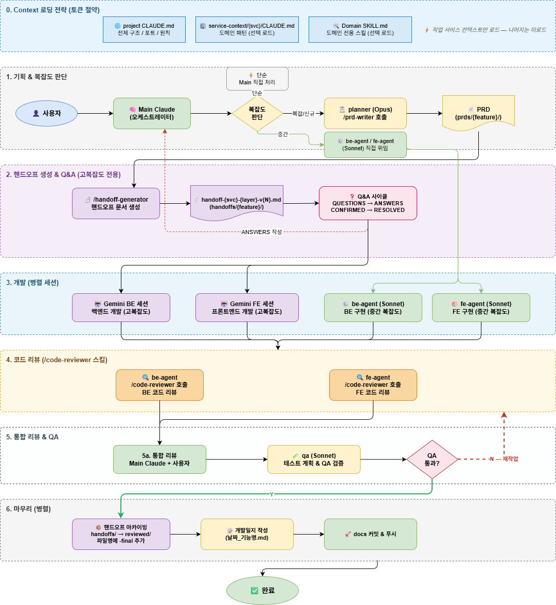

Claude와 Gemini를 역할 분리하여 협업하는
멀티 AI 에이전트 개발 워크플로우.
토큰 절약 · 병렬 개발 · 코드 리뷰 자동화까지.
바이브코딩(Claude ↔ Gemini 협업) 워크플로우 — Agent Orchestration

| 단계 | 참여자 | 산출물 및 경로 (예시) |
|---|---|---|
| 1. 기획 | 사용자Main Claude기획자 에이전트 | prds/lotto-service-prd.md |
| 2. 핸드오프 | Main Claude |
handoffs/lotto-service-backend-gemini-handoff.mdhandoffs/lotto-service-frontend-gemini-handoff.md
|
| 3. 개발 | Gemini BE 세션Gemini FE 세션 (독립) | 각 서비스 소스 코드 및 단위 테스트 |
| 4. 코드 리뷰 | Claude BE 에이전트Claude FE 에이전트 | 리뷰 코멘트 및 리팩토링된 코드 |
| 5. 통합 리뷰 | 사용자Main Claude | 최종 승인 시그널 |
| 6. QA | Main Claude | 테스트 결과 리포트 |
| 7. 배포 준비 | — | 배포용 아티팩트 및 docs/ 문서 업데이트 |
Claude Code는 서브에이전트 기능과 성능이 우수하나, 토큰이 매우 부족한 제약이 존재한다.
토큰 절약을 위해 기획 단계에서 PRD 및 이에 기반한 BE/FE 핸드오프(Handoff) 파일을 각각 마크다운(.md)으로 작성한다.
Gemini가 해당 문서들을 참조하여 개발을 진행함으로써 불필요한 토큰 소모를 방지한다.
각 BE와 FE는 독립된 세션에서 핸드오프 문서만을 참조하여 코드를 병렬로 작성한다.
4단계 코드 리뷰는 Claude의 백엔드 및 프론트엔드 서브에이전트가 전담한다.
서브에이전트 간 소통을 통해 전체 시스템 정합성 확보 및 최적의 구조로 리팩토링을 진행한다.
개발 및 리뷰 완료 후 Main 에이전트와 사용자의 최종 컨펌을 진행한다.
QA 성공 시 배포 준비 완료 시그널을 전송한다.
동시에 docs/의 관련 문서들을 최신 상태로 업데이트하며 프로세스를 종료한다.